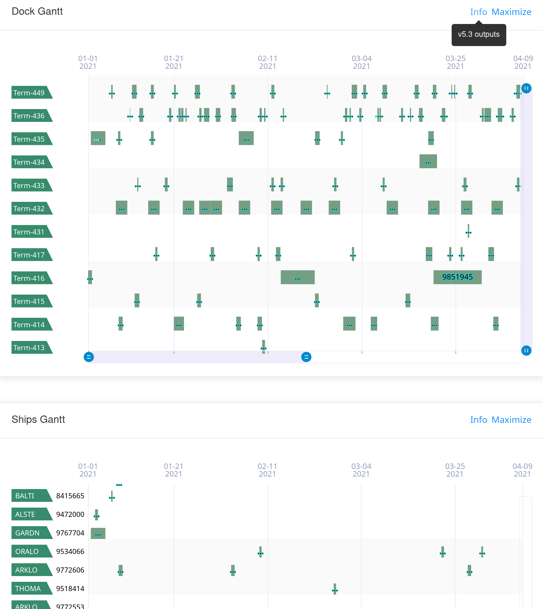
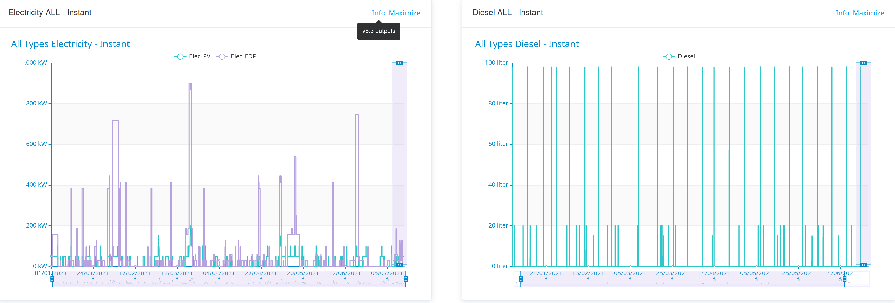
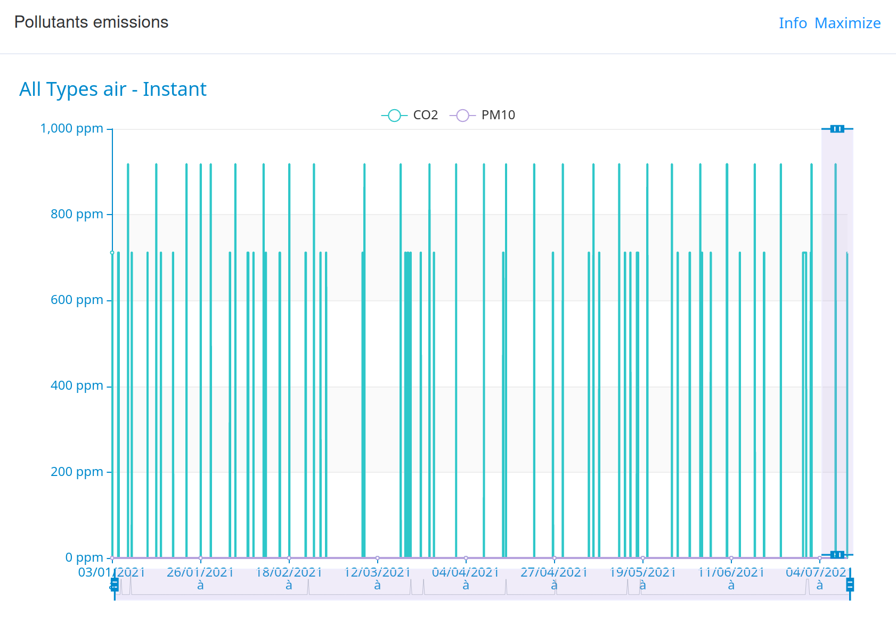

Outputs
The PAS model produces several outputs, which can be classified into two groups, the intended results and the context information.
The table X list all PAS model outputs exported in IH and their default location.
| Item | Default index | Default doc_id |
|---|---|---|
| Scenario | pas_outputs_results | default_handlings |
| Gantts views | pas_outputs_results | default_gantt_view |
| Resources uses | pas_outputs_results | default_resource_use |
| Energy consumptions | pas_outputs_results | default_energies_consumptions |
| Areas occupancy | pas_outputs_results | default_areas_occupancy |
| Pollutant emissions | pas_outputs_results | default_pollutants_emissions |
| Logs | pas_outputs_loggings | default_logs |
| Port parameters | pas_outputs_loggings | default_port_parameters |
| OT call | pas_outputs_loggings | default_ot_call |
| Settings | pas_outputs_loggings | default_settings |
All output have a json structure, with key information in info and actual data in data
{
"info": {
"url": null,
"index": "pas_outputs_results_5.3",
"doc_ID": "default_area_occupancy",
"creation_TS": "2021-07-21T13:04:43"
},
"data": {...}
}
Results
Scenario
The scenario provide for each handling the list of activities in the port to process it. Activities correspond to atomic operations described in supply-chains. Briefly, for each activity is provided: - a general description, - its scheduling (start, duration, end), - resources it require (machines, areas, operators).
Furthermore, depending on outcome modules activated (settings), additional information can be added to each resource used, such as:
- energy consumption (nature, quantity),
- pollutant emission (nature, quantity).
The scenario is actually the outcome with the highest density of information. Schematically, others results are specific views of the scenario, simplified by isolating a specific information dimension.
Currently, there is no user friendly interface available on pixel platform for this output.
Resources uses
For respectively all machines and areas from the port parameters, gives:
- its global use time series - for each timestamp, number of machine instance or operators in the area,
- its maximal capacity - an activity that would require going above this threshold would have its status equal to overload or would be delayed,
- the detail of its uses - pointing for each handling that required this resource, the corresponding activity, the timestamps and quantity required.
Currently, there is no user friendly interface available on pixel platform for this output.
Gantts views
This output contains data to plot to Gantt graphs, allowing to see: - handlings sequence from: - docks view, - ships view, - agents view, - content-type view, - supplychaines view, - activities sequence from: - handlings view, - areas view, - machines view,
As an example, activities:machines view mean to plot all machines on Y axis and time on X axis. A succession of horizontal rectangles represents activities using the machine y between x_i and x_j (optionally colored according to their status: ok, hs, overload, delayed).
|  |
|---|
| A graphical tool is available to display 2 of the available views (handlings:dock view and handlings:ships view). |
Energy consumptions
This output contains data to plot all energy consumption in port across time. Optionally, status with respect to energy threshold could be added.
|  |
|---|
| A graphical tool is available to display energy consumption (both instantaneous and cumulative) for a given energy category. |
Area occupancy
This output contains data to plot the number of operators in the areas, with additional information with respect to its maximal countenance.
For this output, a graphical tool is available to display areas occupancy.
Pollutant emissions
This output contains data to plot all energy consumption in port across time. Optionally, status with respect to energy threshold could be added.
|  |
|---|
| A graphical tool is available to display pollutant emission (both instantaneous and cumulative) for a given pollutant category. |
Loggings
Those outputs are contextual information. They can be used to explain the results, or ensure information storage to reproduce identical PAS model run context (useful to compare scenario).
Logs
A first section resume most important informations about the PAS model run. All modules list their critica message (if any) and sumary of their actions. A second section displays all the information, in an exhaustive way, in the order of appearance of the elements.
Currently, there is no user friendly interface available on pixel platform for this output.
Port Parameters
The content of the port_parameter used by the PAS model. This corresponds to the original value (from document or forced input) plus several modifications, like adding automatically calculated emission factors to the machines.
OT call
The content of the model instance send by the OT to the PAS model. This corresponds to the original value (from document or forced input) without modifications.
Settings
The content of the setting used by the PAS model. This corresponds to the original value (from document or forced input) without modifications.